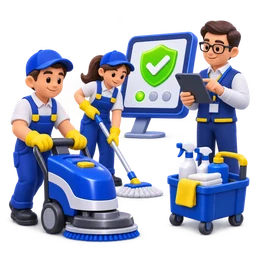

O‘qitilgan jamoa
Obyekt standartiga mos brifing va ish yo‘riqnomasi.
Ofis, do‘kon, ombor va ishlab chiqarish obyektlari uchun xodim, grafik, inventar va nazoratni bir joyda boshqaramiz.
Har bir xizmatning vazifasi aniq: mos sahifada tarkibni ko‘ring yoki menejerdan hisob oling.
Kundalik, haftalik yoki general tozalash. Ish vaqtiga xalaqit bermaydigan grafik.
Xizmatlarni ko‘rish →Savdo zali, vitrina va sanuzellar uchun.
Taklif olish →Katta maydonlar, texnik pol va maxsus grafik.
Taklif olish →Balandlikdagi xavfsiz yuvish ishlari.
Batafsil →Chuqur tozalash, dog‘ ketkazish va jilolash.
Batafsil →Sanitariya talablari bo‘yicha professional ishlov.
Batafsil →Har bir obyekt uchun aniq mas’uliyat, nazorat va hisobot tizimini yo‘lga qo‘yamiz.
Obyekt standartiga mos brifing va ish yo‘riqnomasi.
Chek-list, menejer nazorati va qayta aloqa.
Inventar, kimyo va xodimlar uchun yagona javobgar.
Shartnoma, hisob va yopuvchi hujjatlar tartibda.
Mutaxassis joyiga borib, maydon, zonalar va talablarni aniqlaydi.
Jamoa, inventar, davriylik va aniq narxni beramiz.

Shartnomadan so‘ng menejer ishni yo‘lga qo‘yadi.